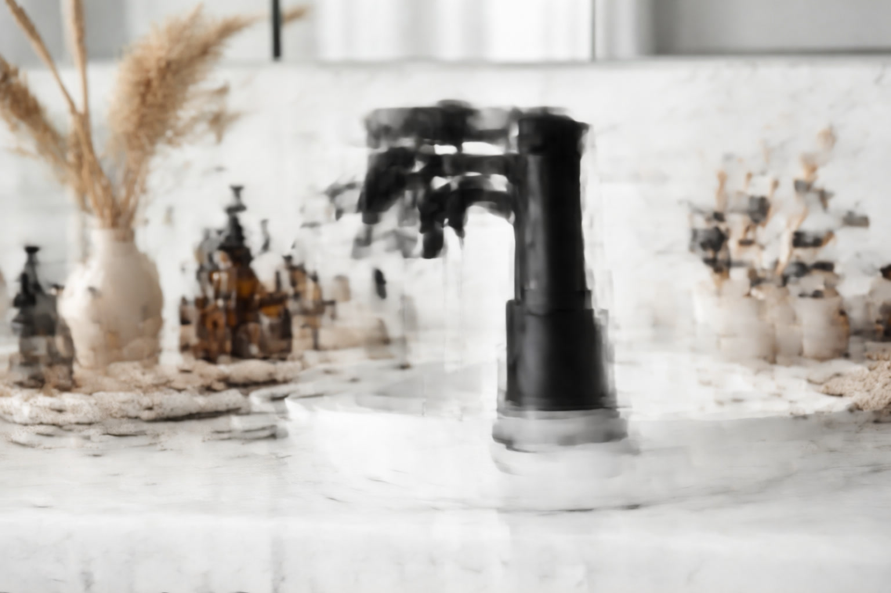

Best Matte Black Bathroom Faucets: 6 Stylish Picks for Modern Bathrooms (2026)

Bathroom Products Expert • 10+ years research

Quick Answer
The Moen Genta LX Matte Black Single-Handle Faucet is our top pick for matte black bathroom faucets. Its PVD finish resists scratching and tarnishing better than competitors, and Moen's lifetime warranty backs it up. For a budget-friendly matte black option, the PARLOS Matte Black Waterfall Faucet delivers stunning looks at just $34.99.
Table of Contents
Why Matte Black Faucets Are the Hottest Trend in 2026
Matte black bathroom fixtures have exploded in popularity over the past three years, and 2026 shows no signs of the trend slowing down. Interior designers consistently rank matte black as the number one finish choice for bathroom renovations. The appeal is rooted in the finish's remarkable versatility. Matte black creates a bold, modern contrast against white sinks, marble countertops, and light-colored tiles that instantly elevates any bathroom from ordinary to designer-quality. Unlike chrome or brushed nickel, matte black makes an intentional design statement that anchors the entire room's aesthetic. From a practical standpoint, matte black hides water spots and fingerprints better than polished finishes. The non-reflective surface also reduces visual clutter, making bathrooms feel more serene and intentional. Combined with its ability to coordinate with virtually any color palette from pure white to warm wood tones to bold jewel colors, it is no surprise that matte black has become the go-to finish for both DIY renovators and professional designers.
Our 6 Best Matte Black Bathroom Faucets
1. Moen Genta LX Matte Black Single-Handle Faucet
Best For: Best overall quality and finish durability
- PVD matte black finish resists scratching
- Moen LifeShine finish guarantee
- Hydrolock quick-connect installation
- 1.2 GPM WaterSense certified
- Lifetime limited warranty
Pros
- Industry-best finish durability
- Quickest installation
- LifeShine guarantee
- Premium ceramic cartridge
Cons
- Premium price
- Modern design only
2. PARLOS Matte Black Waterfall Faucet
Best For: Budget-friendly matte black option
- Dramatic waterfall spout design
- Includes drain assembly and supply lines
- Ceramic disc valve
- Single-handle operation
- Standard 3-hole compatible with deck plate
Pros
- Incredible value under $35
- Complete kit with drain
- Unique waterfall design
- 6,200+ positive reviews
Cons
- Paint finish less durable than PVD
- May show wear in 3-5 years
Comparison Table
| Product | Finish Type | Valve | GPM | Price | Rating |
|---|---|---|---|---|---|
| Moen Genta LX | PVD | Ceramic Disc | 1.2 | $109.99 | 4.7 |
| PARLOS Waterfall | Paint | Ceramic | 1.5 | $34.99 | 4.4 |
Matte Black Finish Types: What You Need to Know
Not all matte black finishes are created equal. Understanding the difference between finish technologies is critical for choosing a faucet that will look great for years rather than months.
PVD (Physical Vapor Deposition): The gold standard for durability. PVD coatings are applied at the molecular level, creating a bond that is virtually impossible to scratch, chip, or tarnish under normal use. Moen, Delta, and Kohler all use PVD for their premium matte black finishes. These faucets command a higher price but are backed by lifetime finish warranties. PVD matte black will look essentially new after 10-15 years of daily use.
Powder Coating: A mid-tier finish where dry powder is electrostatically applied and then heat-cured. Powder coating is more durable than paint but less resistant to scratching than PVD. It provides good value at a moderate price point and typically lasts 5-8 years before showing significant wear in high-contact areas.
Painted/Electroplated: The most affordable matte black finish. These use traditional paint or electroplating techniques that can chip, fade, or wear through to the base metal over time. Budget faucets under $40 typically use this method. They look great initially but may need replacement in 3-5 years depending on use intensity.
Styling Your Matte Black Faucet
Matte black faucets are remarkably versatile in design pairings. For a clean modern look, pair with a white undermount or vessel sink, light marble or quartz countertop, and white subway tile. For industrial style, combine with concrete countertops, open shelving with black brackets, and Edison bulb lighting. For warm contemporary, mix with wood-tone vanity cabinets, warm gray wall colors, and brass or gold accent mirrors. The key rule is to coordinate: if your faucet is matte black, consider matching your cabinet hardware, towel bars, and light fixtures in the same finish for a cohesive look throughout the bathroom.
Care and Maintenance Tips
Matte black finishes require slightly different care than polished metals. Clean daily with a soft microfiber cloth and warm water only. Never use abrasive cleaners, scrub pads, or bleach-based products, as these will damage the matte surface. For mineral deposits in hard water areas, use a 50/50 white vinegar and water solution applied with a soft cloth, then rinse immediately and dry. Avoid leaving acidic substances like toothpaste or certain soaps on the surface for extended periods. With proper care, a quality PVD matte black faucet will maintain its appearance for the lifetime of the product.
Frequently Asked Questions
Does matte black show water spots?
Less than chrome or polished nickel, but more than brushed finishes. The flat surface can show dried water droplets in hard water areas. A quick wipe after use prevents buildup. PVD finishes resist spotting better than painted finishes.
Will matte black faucets go out of style?
Unlikely in the near term. Matte black has transcended trend status to become a design staple alongside chrome and brushed nickel. Its versatility with many bathroom styles suggests lasting appeal.
Can I mix matte black with other finishes?
Yes, but intentionally. Matte black pairs beautifully with brushed gold for a two-tone luxury look, or with natural wood tones. Avoid mixing matte black with polished chrome in the same room, as the contrast can look disjointed.
Our Final Verdict
The Moen Genta LX at $109.99 offers the best matte black finish on the market with its PVD coating and LifeShine guarantee. For budget renovations, the PARLOS Waterfall at $34.99 delivers striking matte black style at a fraction of the cost.